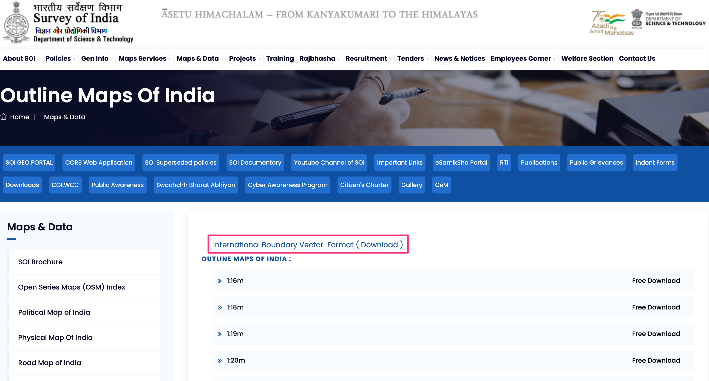
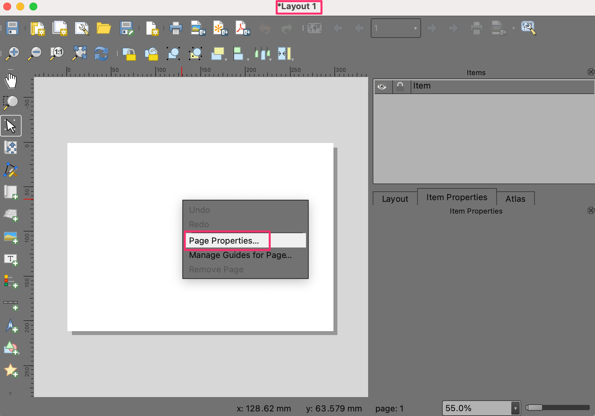
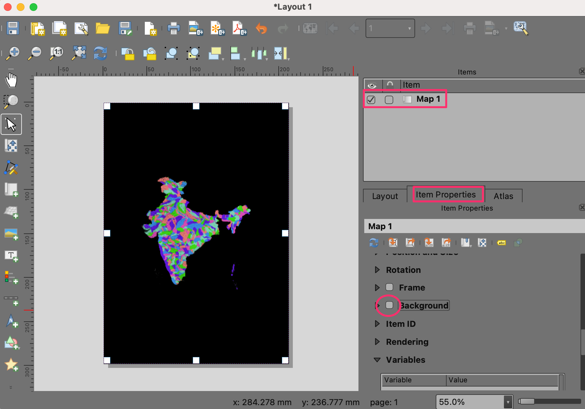
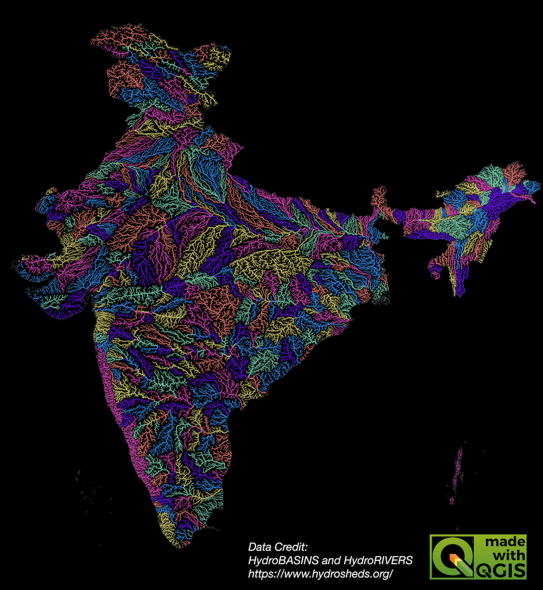

Ujaval Gandhi
Ujaval GandhiKreiranje karte rečnog sliva u boji (QGIS3)¶
U ovom tutorijalu ćemo naučiti QGIS tok rada za kreiranje umetničkih rečnih mapa za vašu zemlju ili region koristeći otvoreno dostupne hidrološke podatke.
Белешка
Ovaj tutorijal je inspirisan prelepim mapama koje je napravio Grasshopper Geography. Posedujem jedan njihov otisak i vi takođe možete podržati njihov rad kupovinom jedne od njihovih mapa iz njihove onlajn prodavnice.
Pregled zadatka¶
U ovom tutorijalu, preuzećemo slojeve podataka o slivovima i rekama iz HydroSHEDS-a i kreirati mapu sliva za reke Indije.

Druge veštine koje ćete naučiti¶
Kako dodeliti projekciju vektorskom sloju sa netačnom ili nedostajućom projekcijom.
Kako dodati više slojeva u jedan GeoPackage.
Kako dodati oznaku „Napravljeno pomoću QGIS-a“ na vašu mapu.
Dobijte podatke¶
HydroSHEDS pruža globalne hidrološke skupove podataka pogodne za regionalne i globalne primene. Slojevi podataka su izvedeni iz hidrološki uslovljenog DEM-a iz SRTM-a.
Granice basena¶
HidroBasins pruža poligonske granice basena za različite kontinente. Granice su hijerarhijske – svaki basen na nivou N je dalje podeljen na manje basene na nivou N+1. Za ovaj tutorijal, koristićemo granice basena nivoa 6. Možete koristiti različite nivoe u zavisnosti od vašeg regiona i vrste mape koju želite da kreirate. Posetite stranicu HydroBASINS i preuzmite zip datoteku za vaš region.

Белешка
Granice sliva HydroSHEDS su izvedene iz SRTM podataka koji su u ovom trenutku stariji od 20 godina. Granice sliva se možda ne podudaraju sa zvaničnim granicama sliva u vašem regionu. Možete zameniti podatke HydroBasins poligonima iz zvaničnih izvora kada su dostupni.
Rečna mreža¶
HydroRIVERS pruža linijski shapefajl koji predstavlja rečnu mrežu. Posetite stranicu HydroRIVERS i preuzmite zip datoteku za vaš region koji vas zanima.

Administrativna granica¶
Iseći ćemo podatke HydroSHEDS-a na granicu vašeg izabranog regiona. U ovom tutorijalu, želimo da napravimo mapu rečnog sliva Indije, pa ćemo dobiti shapefile granica iz Survey of India. Posetite stranicu Outline Maps of India i preuzmite vektorski format međunarodne granice Indije. Ako su vam potrebne administrativne granice za druge zemlje ili države, možete ih dobiti sa GADM ili geoBoundaries.

Kada se sve datoteke preuzmu, raspakujte ih i kopirajte u fasciklu. Sada bi trebalo da imate 3 shapefile-a: hybas_as_lev06_v1c.shp, HydroRIVERS_v10_as.shp i administratorske granice `polymap15m_area.shp`.

Izvori podataka: [HYDROSHEDS], [SOI]
Procedura¶
Otvorite QGIS i pronađite preuzete datoteke u QGIS Browser. Prevucite i ispustite
hybas_as_lev06_v1c.shpiHydroRIVERS_v10_as.shpna platno.

Pronađite shapefile administrativnih granica
polymap15m_area.shpi prevucite ga i ispustite na platno.

Slojevi podataka HydroSHEDS-a imaju neke elemente sa nevažećim geometrijama. Hajde da ih popravimo dalje. Otvorite kutiju sa alatkama za obradu iz . Potražite i pronađite alatku . Dvaput kliknite da biste je pokrenuli.

Белешка
Možete pregledati tutorijal Rukovanje nevažećim geometrijama (QGIS3) da biste saznali više o uzrocima i rešenjima za nevažeće geometrije.
Izaberite
hybas_as_lev06_v1ckao Ulazni sloj. Kliknite na dugme … pored Fiksne geometrije i izaberite Sačuvaj u GeoPackage….
Idite do lokacije gde želite da sačuvate izlazne podatke i unesite ime
data.gpkg. Kliknite na Sačuvaj. Bićete zamoljeni da unesete Naziv sloja. Unesitebasins_fixed. Kliknite na U redu. Zatim kliknite na Pokreni da biste pokrenuli algoritam i generisali izlazni sloj.

Ponovite korak za sloj
HydroRIVERS_v10_as. Izaberite isti GeoPackagedata.gpkgkoji je kreiran u prethodnom koraku. Ne brinite ako dobijete poruku koja ukazuje da će datoteka biti prebrisana. QGIS neće prebrisati datoteku, već će dodati novi sloj istom GeoPackage-u. Ovaj put koristiterivers_fixedkao Naziv sloja.

Sloj „polymap15m_area“ dolazi sa projekcijom koju QGIS ne prepoznaje. Dodelićemo poznatu projekciju ovom sloju. Potražite i pronađite alatku i dvaput kliknite da biste je otvorili.

Белешка
Imajte na umu da alatka Dodeli projekciju ne reprojekuje sloj, već jednostavno dodaje ispravne informacije o projekciji postojećem georeferenciranom sloju sa nedostajućom ili netačnom projekcijom. Koristite alatku Reprojektuj sloj ako želite da promenite CRS sloja.
Izaberite
polymap15m_areakao Ulazni sloj. Kliknite na dugme Izaberi CRS i potražite projekcijuEPSG:7755 - WGS 84 / India NSF LCCi izaberite je. Kliknite na dugme … pored Dodeljeni CRS i izaberite Sačuvaj u GeoPackage….

Izaberite isti GeoPackage
data.gpkgi unesite naziv slojaadmin_boundary_fixed. Kliknite na Pokreni.

Sada ćete imati 3 nova sloja
basins_fixed,rivers_fixediadmin_boundary_fixedučitana u Layers panel u QGIS-u. Držite taster Shift i izaberite sve preostale slojeve. Kliknite desnim tasterom miša i izaberite Remove Layer….
Sada ćemo iseći slojeve slivova i reka na administrativnu granicu. Potražite i pronađite alatku iz alata za obradu. Dvaput kliknite da biste je otvorili.
Izaberite
basins_fixedkao Ulazni sloj iadmin_boundary_fixedkao Sloj preklapanja. Sačuvajte izlaz u isti GeoPackagedata.gpkgkao i slojbasins_clipped. Kliknite na Pokreni.

Kada se obrada završi, ponovite postupak sa slojem
rivers_fixedkao Ulazni sloj. Sačuvajte izlaz u isti geopaketdata.gpkgkao i slojrivers_clipped. Kliknite na Pokreni.

Sada ćete imati 2 nova sloja
basins_clippedirivers_clipped, kao i slojadmin_boundary_fixedučitane u Layers panel u QGIS-u. Držite pritisnut taster Shift i izaberite sve preostale slojeve. Kliknite desnim tasterom miša i izaberite Remove Layer….

Pre nego što nastavimo dalje, sačuvajmo projekat. QGIS vam omogućava da sačuvate projekat unutar GeoPackage-a - što ga čini veoma praktičnim za izbegavanje upravljanja dodatnim datotekama. Idite na .

U dijalogu Sačuvaj projekat u GeoPackage, kliknite na dugme … pored Veza i pregledajte postojeću datoteku
data.gpkg. Unesite imerivers_basin_mapkao ime Projekta. Kliknite na U redu.

Kada se sačuva, možete proširiti
data.gpkgu panelu Browser i videti da je QGIS projekat sada sačuvan unutar GeoPackage-a. Korisnici ovog GeoPackage-a sada mogu da otvore projekat direktno iz GeoPackage-a.

Da bismo kreirali našu mapu u boji, potrebno je da obojimo sve basene tako da nijedan susedni basen nema istu boju. QGIS ima alatku za to. Otvorite alatku iz alata za obradu.

Izaberite
basins_clippedkao Ulazni sloj. Ostale opcije ostavite na podrazumevanim vrednostima. Sačuvajte izlaz u isti GeoPackagedata.gpkgkao i slojbasins_with_color. Kliknite na Pokreni.

Kada se obrada završi, novi sloj
basins_with_colorće biti učitan u panel Layers. Kliknite desnim tasterom miša na sloj i izaberite Open Attribute Table. Primetićete da sloj ima novi atribut pod nazivomcolor_idsa celobrojnom vrednošću. Dodeljivanje jedinstvene boje svakoj celobrojnoj vrednosti rezultiraće topolokalnim bojenjem sloja.

Želimo da prenesemo identifikator boje za sliv na sve reke koje se u njemu nalaze. Otvorite alatku iz alata za obradu.
Ovde želimo da izaberemo
rivers_clippedkao sloj za Spojiti sa objektima u ibasins_with_colorkao sloj za Poređenjem sa. U odeljku Polja za dodavanje kliknite na dugme … i izaberite poljecolor_id. Sačuvajte izlaz u geopaketudata.gpkgkao slojrivers_with_color. Kliknite na Pokreni.

Kada se obrada završi, novi sloj
rivers_with_colorće biti učitan u panel Layers. Sada je vreme da primenite simbologiju. Izaberite slojadmin_boundary_fixedi kliknite na dugme Otvori panel za stilizovanje slojeva u panelu Layers. Promenite boju u crnu.

Zatim, izaberite sloj „rivers_with_color“ i izaberite renderer „Categorized“.

Izaberite
color_idkao Value i kliknite na Classify. Videćete da će rekama u različitim slivovima biti dodeljena različita boja.

Белешка
Ako niste zadovoljni nasumično odabranim bojama, možete kliknuti na Simbol za pojedinačne vrednosti u listi ispod i izabrati svoju boju.
Podrazumevane linije su predebele za našu mapu. Hajde da to promenimo. Držite pritisnut taster Shift i izaberite sve simbole sa liste. Kliknite na Simbol da biste otvorili Podešavanja simbola.

Kliknite na Simple Line i promenite širinu linije na
0.1. Mapa će sada izgledati mnogo bolje.

Možemo poboljšati mapu dodeljivanjem različitih širina rekama na osnovu njihove veličine. Sloj „rivers_with_color“ ima polje „ORD_STRA“ koje sadrži vrednost „Stralerovog reda <https://en.wikipedia.org/wiki/Strahler_number>“ reke. Što je broj veći, to je reka veća. Koristićemo Asistenta da nam pomogne da koristimo vrednost Stralerovog reda za odgovarajuću širinu poteza. Kliknite na dugme Data defined override pored Stroke width i izaberite Assistant….

U odeljku Input, izaberite polje
ORD_STRAkao Source sa Values from1do to6. U odeljku Output, izaberite Size from kao0.05i to kao0.2. Mapa će se dinamički ažurirati dok unosite vrednosti. Možda ćete morati da prilagodite ove vrednosti u zavisnosti od vašeg regiona. Kada budete zadovoljni mapom, kliknite na dugme Back.

Primetićete da je dugme Poništenje definisano podacima za Širina poteza sada žuto, što ukazuje da je na ovo podešavanje primenjeno aktivno poništenje.

Naša mapa rečnog sliva u boji je sada spremna. Hajde da stavimo ovu mapu u raspored kako bismo mogli da izvezemo verziju visoke rezolucije sa drugim elementima mape. Idite na . Kada se od vas zatraži da unesete ime, ostavite polje prazno i kliknite na U redu.
U prozoru Raspored 1, kliknite desnim tasterom miša na prazno platno i izaberite Svojstva stranice….

Izaberite
A4kao Size. Promenite Background boju u crnu.

Idite na .

Držite levi taster miša i izaberite oblast na platnu gde želite da se mapa postavi.

Kada se mapa pojavi, skrolujte nadole na kartici Svojstva stavke i isključite Pozadina.

Белешка
Ako ne vidite karticu Svojstva stavke ili je slučajno zatvorite, možete je vratiti tako što ćete otići na u meniju Raspored.
Hajde da podesimo obim mape. Kliknite na dugme Interaktivno uredi obim mape, a zatim koristite miš da pomerate mapu. Takođe možete koristiti točkić za pomeranje da biste podesili zumiranje. Ako želite precizniju kontrolu nad zumiranjem, ručno podesite vrednost Skala. Ponavljajte dok ne budete zadovoljni položajem mape.

Zatim ćemo dodati QGIS logo na mapu. Idite na .

Nacrtajte pravougaonik gde želite da postavite logo. U dijalogu Item Properties pronađite grupu ikona logos. Izaberite logo
Made with QGIS.

Zatim ćemo dodati etiketu sa podacima o autorima. Idite na . Unesite tekst za podatke o autorima i podesite font i poravnanje etikete.

Kada budete spremni da izvezete rezultate, idite na . Potražite fasciklu na računaru gde želite da sačuvate PNG sliku i unesite ime
river_basins.png.
zaberite
300 dpikao Rezoluciju izvoza i kliknite Sačuvaj.

Kada se izvoz završi, imaćete konačnu sliku mape na izabranoj lokaciji.

Evo konačne PNG slike koju smo kreirali koristeći QGIS i otvorene skupove podataka.

If you want to give feedback or share your experience with this tutorial, please comment below. (requires GitHub account)